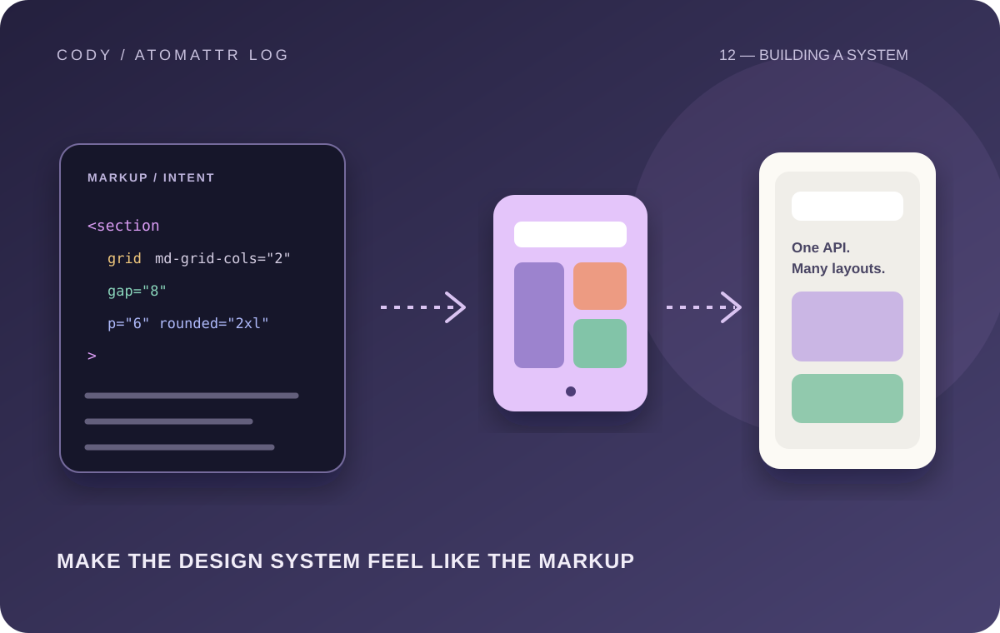

Why I Started Building My Own CSS Framework
4–6 min read

There is a point in every developer's journey where using existing tools stops feeling like enough.
For me, that feeling eventually led to building my own CSS framework.
It did not start with the idea that I was going to create the next huge frontend framework. I simply kept running into the same question while building interfaces: what if the styling system worked the way I naturally wanted to write HTML?
I have used different approaches to styling over the years. Traditional CSS is incredibly flexible, utility-based systems are extremely productive, component libraries can save a lot of time, and CSS-in-JS has its own advantages. But every approach also comes with decisions that affect how I think about the interface.
I wanted to experiment with a different idea: styling through HTML attributes.
Instead of constantly building long class strings, the idea was to make the intent of an element immediately visible.
<div bg="blue-500" p="4" grid-cols="2">
...
</div>At first glance, this seems like a small syntax change. It isn't.
Changing the syntax changes how you think about the entire styling engine.
A framework like this has to understand attributes, values, responsive variants, states, spacing, colors, typography, layout, and eventually more complicated relationships between properties. It also has to generate or resolve styles efficiently without making the developer experience frustrating.
That was where the real learning started.
The hardest part wasn't writing CSS
CSS itself was never the main problem.
The difficult part was deciding what the framework should actually do.
Should every CSS property have an attribute? Should values follow a strict scale? How should responsive modifiers work? What happens when a user combines multiple variants? How should dark mode work? How do you make the syntax predictable enough that someone can use it without constantly checking documentation?
These questions forced me to think beyond individual styles.
I started thinking about a styling system as a language.
A good styling system has rules. Once you understand those rules, you should be able to predict what something will do without memorizing hundreds of unrelated options.
That principle became more important to me than simply adding more features.
Building the system changed how I understand CSS
When you use a framework, it is easy to forget how much work exists underneath the API.
Writing something like p="4" looks simple, but underneath it is a chain of decisions. The framework has to interpret the attribute, understand the value, map it to a spacing definition, generate the correct CSS, and make sure that the result works with the rest of the system.
The same thing becomes more interesting when you introduce responsive behavior.
<div grid-cols="1" md-grid-cols="2" lg-grid-cols="4">
...
</div>Now the framework isn't just describing a style. It is describing how the style changes depending on the viewport.
That made me appreciate CSS architecture much more.
Frameworks are really about decisions
One of the biggest lessons I learned is that a framework isn't valuable because it has the most features.
It is valuable because it makes common decisions easier.
If a developer needs to repeatedly decide how much padding a card should have, what color a secondary button should use, how a grid should behave on mobile, or how focus states should look, a good system can remove that friction.
But a framework can also become a problem when it tries to solve everything.
That is something I had to learn while building.
There is always another feature that sounds useful. Another utility. Another variant. Another component. Another configuration option.
Eventually, you have to ask whether the feature makes the system better or simply makes it bigger.
Building for more than one environment
Another interesting part of the project was thinking about how the same design philosophy could extend beyond normal HTML.
Modern frontend development is increasingly cross-platform. A styling idea that works beautifully on the web is not automatically useful in React Native, and the underlying platforms have different capabilities.
That forced me to separate the idea of a styling API from the implementation behind it.
The goal isn't necessarily for every platform to behave identically. The goal is for the developer to have a consistent mental model.
That distinction is surprisingly important.
What I actually gained from the project
The biggest result of building my own CSS framework isn't the framework itself.
It is the understanding I gained while building it.
I learned more about CSS architecture, parsing, responsive systems, design tokens, developer experience, API design, documentation, and the uncomfortable process of deciding when a project is actually ready.
I also learned something about my own development habits.
It is very easy to keep polishing a project forever.
There is always something that can be improved. But eventually the project needs real users, real feedback, and real-world pressure.
A project sitting locally can only teach you so much.
Why I still think building from scratch is valuable
I don't think every developer needs to build a CSS framework.
But I do think developers should occasionally build something that forces them to understand what normally happens underneath the tools they use.
That kind of project exposes assumptions.
It teaches you why certain APIs exist. It shows you where complexity comes from. It makes documentation feel less optional. And it teaches you that a seemingly simple developer experience can require a surprising amount of engineering underneath.
For me, building a CSS framework became less about creating another tool and more about understanding how tools should be designed.
And that lesson is useful far beyond CSS.